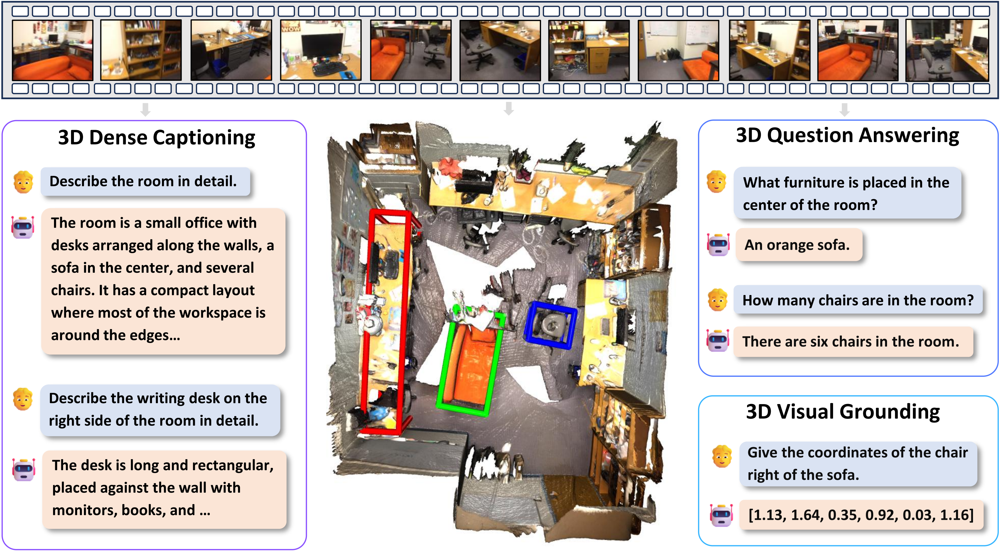
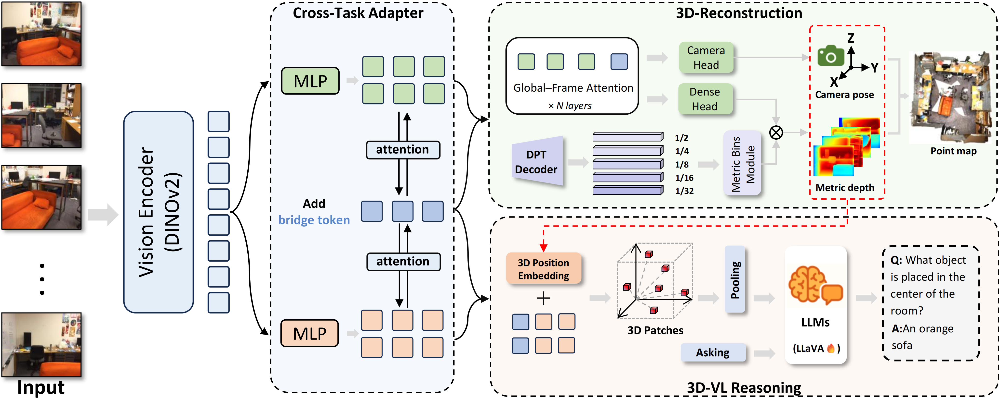
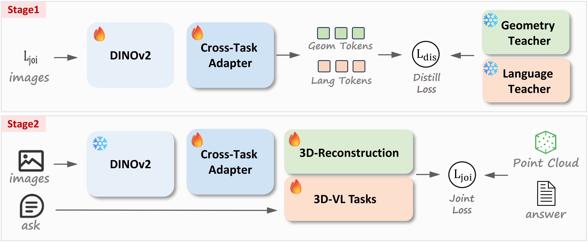

Abstract
Recent developments in Multimodal Large Language Models (MLLMs) have significantly improved Vision–Language (VL) reasoning in 2D domains. However, extending these capabilities to 3D scene understanding remains a major challenge. Existing 3D Multimodal Large Language Models (3D-MLLMs) often depend on 3D data inputs, which limits scalability and generalization. To address this limitation, we propose Vid-LLM, a video-based 3D-MLLM that directly processes video inputs without requiring external 3D data, making it practical for real-world deployment. In our method, the geometric prior are directly used to improve the performance of the sceen perception. To integrate the geometric cues into the MLLM compactly, we design a Cross-Task Adapter (CTA) module to align the 3D geometric priors with the vision-language representations. To ensure geometric consistency and integrity, we introduce a Metric Depth Model that recovers real-scale geometry from the reconstruction outputs. Finally, the model is fine-tuned with a two-stage distillation optimization strategy, realizing fast convergence and stabilizes training. Extensive experiments across diverse benchmarks verified the effectiveness of our method on 3D Question Answering, 3D Dense Captioning and 3D Visual Grounding tasks, demonstrating the superior multi-task capabilities.
Quick Demo
Qualitative Results

Our model can accomplish the following three tasks: (1) 3D Question Answering, where the model answers queries on object counts, locations, and attributes from reconstructed scenes; (2) 3D Dense Captioning, which provides detailed semantic descriptions of rooms and key objects; and (3) 3D Visual Grounding, where the model localizes target objects in 3D space according to textual instructions.
Qualitative results of 3D visual grounding on the ScanRefer dataset. Each demo demonstrates how the model localizes target objects in reconstructed 3D scenes according to natural language queries.
Overview of Vid-LLM

we propose Vid-LLM, a video-based 3D-MLLM that directly processes video inputs without requiring external 3D data, making it practical for real-world deployment.
Vid-LLM Architecture

From video, a shared DINOv2 encoder produces tokens that are bidirectionally fused by Cross-Task adapter with learnable Bridge Tokens, yielding geometric and semantic streams. The reconstruction branch predicts camera poses, depth and recovers real-scale via a Metric-Bins module, while the 3D-VL branch lifts features into 3D tokens for LLM reasoning.
Training Strategy

We adopt a two-stage training strategy to utilize the shared encoder for both geometry and semantics. Stage 1 performs dual-teacher distillation, transferring geometric priors from a reconstruction model and semantic knowledge from a multimodal LLM, enabling the encoder to learn both capabilities in a balanced way. Stage 2 jointly optimizes all downstream modules with 3D vision–language objectives, while incorporating auxiliary reconstruction losses to provide the model with sufficient reconstruction capability and ensure real-scale consistency.